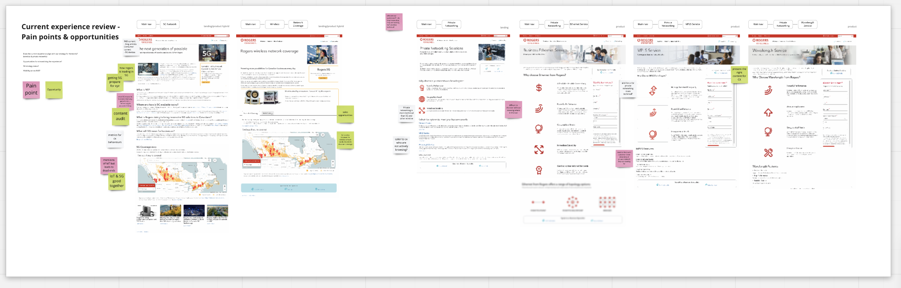
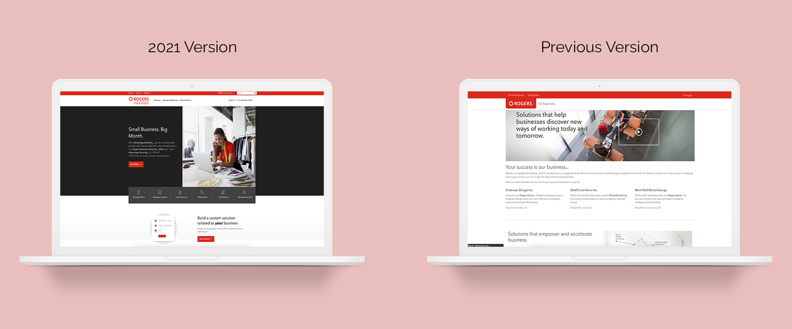

Rogers Communication
PROJECT TIMELINE
Nov 2020 - April 2021
SKILLS
Component creation, workshops, wireframing, hi-fi mockups
ABOUT
Over the last year and a half, I’ve been working as a UX Designer at Rogers Communications (Rogers), designing internal tools and client-facing applications. Below are some of the non-NDA-protected designs I worked on that are currently available to the public.
Introduction
Rogers for Business (R4B) provides technological products and services that fit the needs for business customers in Canada. At Rogers’ R4B design team, we embodied a “work slow, so we can work fast” mindset. We aimed to redesign and restructure the R4B website to create a cohesive experience throughout the platform. It was a goal of mine to reinvent our design system into an enhanced style that seamlessly integrated with our current website. The project’s mission was to empower designers to work faster with our tools and to promote innovation throughout the design team.
PROJECT GOALS
Early in the project, our design team aligned on project goals. We asked ourselves, “What does success look like?” Transforming the current experience away from an online informative repository. How?
- Redesign the current experience into a website where our business customers can learn and purchase personalized product offerings and get personalized recommendations.
- Elevate the R4B brand with a more sophisticated look and experience.
- Leverage data metrics to inform our designs: this includes website traffic, CTR, and conversion rates.
Discovery

We brainstormed on user needs and how potential customers could use the platform.
In this stage, we defined a core persona:
enterprise and business customers looking for wireless products and services for their business’ needs.
We were unsure of what business needs meant, so we set off to define these requirements:
- Conducted design thinking workshops to spark new ideas and achieve alignment with all stakeholders
- Collaborated with other designers in whiteboard sessions.
- Thoroughly review pain points and issues from the previous site version.
Solution

Our design process is structured from a discovery to design phase. (See diagram above)
My solution was anchored around four pillars:
- Improve our current design system Our new design system includes:
- CMS page templates for future page implementations to ensure cohesive reusability
- Components with technical specifications for developers
- Typography and spacing guidelines
- Colour palette
- Update the previous look and feel of R4B to align with modern design standards 
- Use clear and consistent language I used a simple and descriptive copy that is easy for customers to understand. I aimed to take away unnecessary technical jargon so users could focus on their primary task.
- Match guidance with intent During user interviews, I discovered that 90% of users are willing to answer a few multiple-choice questions to receive recommended solutions. I designed our solution finder, which produced personalized and relevant recommendations to the user. At our card sorting workshop, we reorganized the website’s navigation so users could easily find necessary information. Throughout the entire platform, I created visual components that easily allude to products that help customers find their technological needs.
Final
Visit Rogers for Business website for a more thorough walkthrough!
Please note that some components and pages are still in production.
Conclusion
Given time constraints, not a lot of time was allocated to analyze the metrics and make further modifications post-production. For future improvements, I’m looking to observe and improve on sections that were deprioritized and achieved a lower scoring data metric in order to produce a consistent experience across the platform.